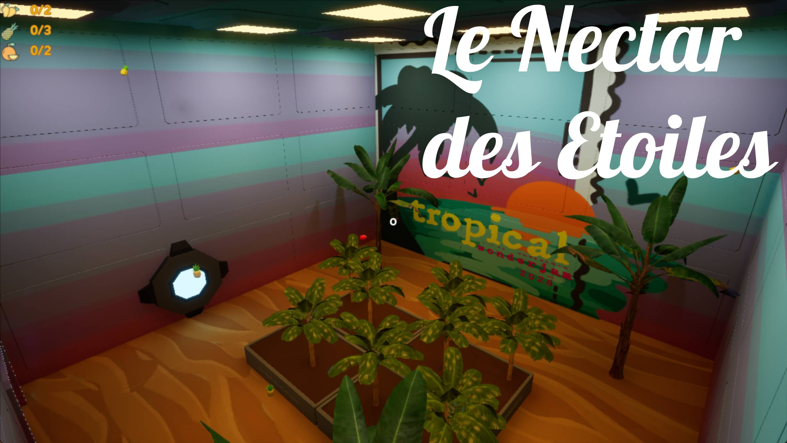
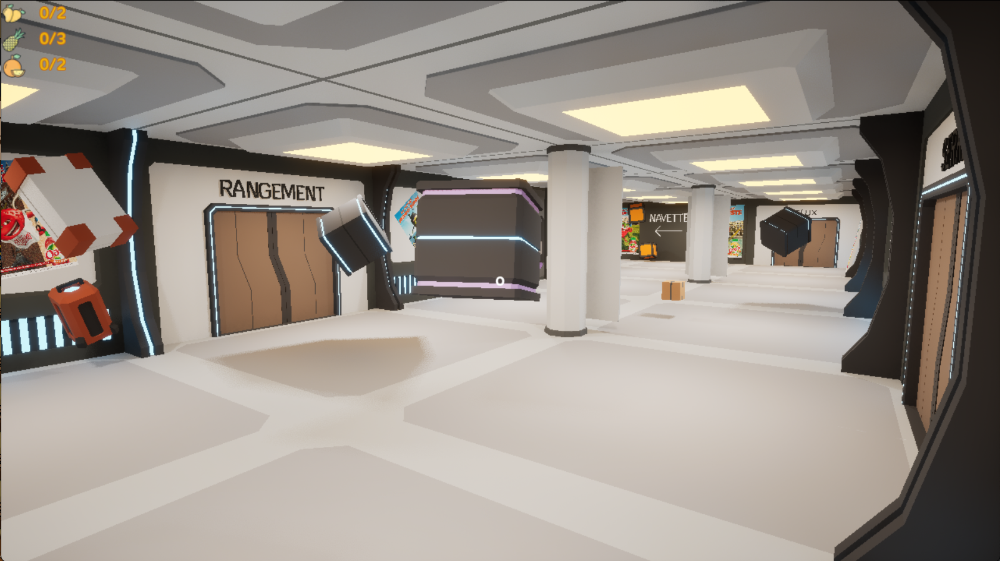
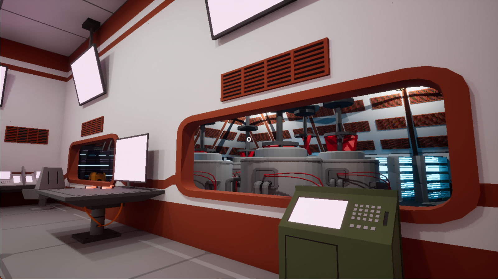
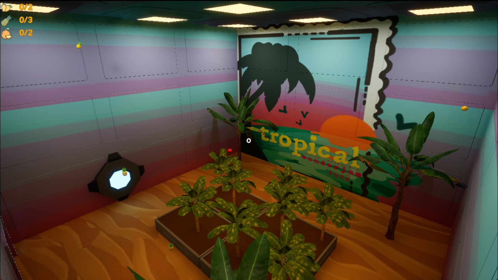

Le Nectar des Étoiles
Le Nectar des Étoiles est un jeu narratif court, développé en 48h sous Unreal Engine pour la WonderJam d'Hiver 2026 à l'UQAC. Le joueur incarne un jeune ouvrier d'une station spatiale dédiée à la production d'Oasis tropical, confronté à une journée qui dérape peu à peu.

Le projet a remporté la 1ère place de la jam. Il mise sur une ambiance tendue, une direction artistique liée à la station spatiale et une narration à choix multiples pensée pour marquer rapidement le joueur.
Pitch
Vivez une journée hors norme dans la peau d'un ouvrier d'une station spatiale de production d'Oasis tropical. Entre routine, pression et décisions décisives, chaque choix rapproche le joueur d'une issue différente.
Contexte de création
- Événement: WonderJam d'Hiver 2026 - AEMI / UQAC
- Durée: 48 heures
- Moteur: Unreal Engine
- Résultat: 1ère place de la jam
Thèmes de la jam
Le concept du jeu est né de la combinaison de quatre thèmes imposés:
- Tropical, le thème de la jam
- Dans les étoiles, un univers situé dans l'espace
- L'embarras du choix, avec un jeu à fins multiples
- Mon... Ami? où l'allié du joueur peut aussi devenir son ennemi
Rôle dans l'équipe
J'ai participé au développement de certaines fonctionnalités du jeu, mais mon rôle a surtout consisté à coordonner l'équipe et à répartir les tâches. J'ai veillé à garder une direction claire pendant la jam, à organiser l'avancement et à m'assurer que chaque membre savait quoi produire et dans quel ordre.
Cette organisation a été essentielle pour tenir le rythme imposé par les 48 heures et pour garder une cohérence entre le gameplay, la narration et la production technique.
Expérience de jeu
Le cœur du projet repose sur une narration courte mais tendue, où les choix du joueur orientent le déroulement de la journée et sa conclusion. L'univers de la station spatiale sert de cadre à une histoire qui joue sur la pression, la confiance et le doute.
L'objectif était de proposer une expérience marquante malgré le temps très court de production, en misant sur une idée forte, une mise en scène lisible et des fins multiples pour encourager la rejouabilité.
Captures du jeu
Quelques images supplémentaires du projet pour illustrer l'ambiance et les différents espaces de la station.



Fiche technique
- Type: jeu narratif court
- Genre: aventure / narration à choix
- Langage / moteur: Unreal Engine
- Durée de production: 48h
- Cadre: WonderJam d'Hiver 2026
Ce que le projet met en avant
- La capacité à construire une expérience jouable complète en temps limité.
- La cohérence entre thèmes imposés, écriture et univers visuel.
- La mise en place d'une narration à fins multiples dans un format court.
- Le travail d'équipe sous contrainte de jam, avec coordination et répartition rapide des tâches.